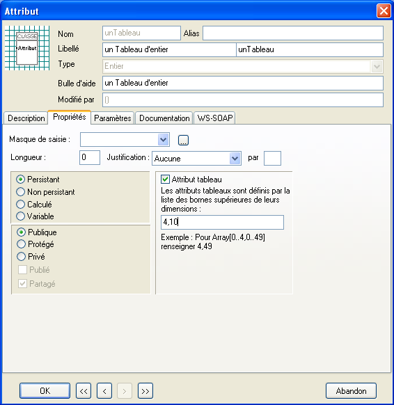
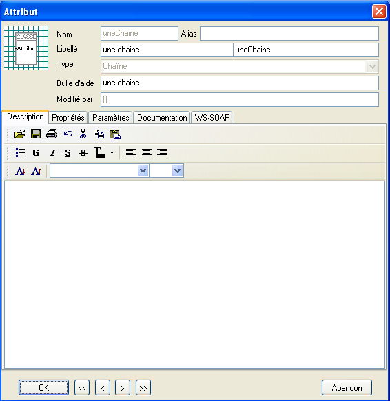
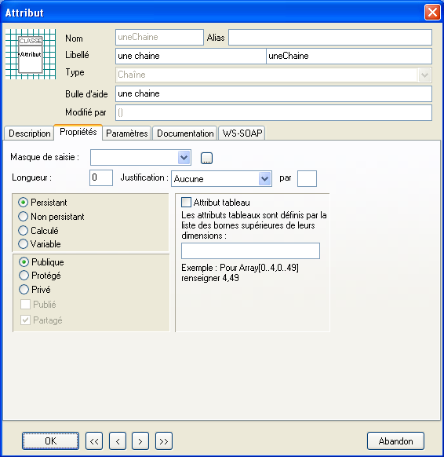

Attributs (model)
Sommaire |
Attributs
Les attributs peuvent être classés en trois catégroies :
- Les attributs framework.
- Les attributs de type simple
- Les attributs de type métier.
Attributs framework
Ce sont des attributs créés et gérés par le framework en fonction du stéréotype de la classe.
Toutes les classes ont un ensemble communs d'attributs framework :
| Attribut | Type | Accès | Usage |
|---|---|---|---|
| oid | Chaîne de 32 caractères | Lecture | Identificateur d'objet |
| InstanceOID | Chaîne de 32 caractères | Lecture | Identificateur d'objet |
| Caption | Chaîne | Lecture/Ecriture | Libellé identifiant l'objet |
| ObjectClassName | Chaîne | Lecture | Nom de la classe de l'objet |
| ObjectClassLabel | Chaîne | Lecture | Libellé de la classe de l'objet |
D'autre attributs framework peuvent exister en fonction du stéréotype de la classe.
Attributs de type simple
Les types simples sont des types de données primaires définis dans le framework.
Les attributs de type simple peuvent être d'un type suivant :
| Type | Usage | Taille | Codage |
|---|---|---|---|
| String | Chaîne | Variable | ANSI |
| Integer | Entier | 4 | 32 bits signés |
| LongInt | Entier long | 8 | 64 bits signés |
| TDatetime | Date et heure | 8 | Double |
| Date | Date | 8 | Double |
| Time | Heure | 8 | Double |
| Boolean | Logique | 4 | 0 ou 1 |
| Double | Flottant double précision | 8 | |
| Currency | Valeur monaitaire | 8 | Entier 64 bits signé
Virgule fixe 4 positions |
Attributs de type métier
Les types métiers sont des types de données souvent composites présentant un ensemble de comportements permettant de gérer une problématique métier.
Les attributs de type métiers peuvent être d'un type suivant :
| Description | Type de stockage |
|---|---|
| Montant en devise | Monétaire |
| Montant de transaction | Monétaire |
| Numérique | Numérique |
| Quantité | Numérique |
| Quantité avec référence | Numérique |
| Compteur alphanumérique | Chaîne |
| Référence d'objet | Chaîne |
| Identité | Compteur numérique |
| Identité SQL | Compteur SQL |
| Enuméré | Entier |
| Mémo | Texte |
| Image | Binaire |
| Binaire | Binaire |
| Marque de traitement | Date |
| Contrôleur | Chaîne |
| Liste de date | Chaîne |
| Liste d'entier | Chaîne |
| Liste d'objet | <non stocké> |
| Curseur | <non stocké> |
| Curseur d'importation | <non stocké> |
| Document XML | Binaire |
| Document XSL | Binaire |
Attributs sérialisés
Les types sérialisés sont des types de données numériques pouvant être utilisés dans les cumuls et permettant une mise à jour incrémentale. Ces types permettent d'éviter les verrouillages lors des mises à jour de cumuls.
Les attributs de type métiers peuvent être d'un type suivant :
| Type sérialisé | Type équivalent |
|---|---|
| Entier sérialisé | Integer 32 bits |
| Valeur flottante sérialisée | Double |
| Valeur monétaire sérialisé | Currency |
| Quantité sérialisée | Quantity |
Attributs dérivés
Les attributs dérivées sont des attributs dont la valeur n'est pas stockée dans l'instance de l'objet mais calculée par une opération appelée règle de dérivation.
Attributs dérivés calculés
Les attributs dérivés calculés, sont des attributs dérivés persistants. Lors de la mise à jour de l’objet, ils sont stockés en base de données.
Un attribut dérivé stocké est considéré comme valide après la lecture de l’objet ; au moment de l’écriture, il est recalculé si nécessaire pour assurer de stocker une valeur valide.
| Note : Les attributs dérivés stockés permettent de rendre accessible en SQL des attributs dérivés. |
Attributs tableaux
Les attributs peuvent être déclarés sous forme de tableau multi-dimensionnel. Cet usage peut être utile dans certain cas pour dénormaliser le modèle et améliorer les performances, néanmoins l'usage de tableau ne correspondant pas à une approche objet de la conception.
Un attribut tableau est défini comme un attribut ordinaire, la case à cocher Attribut tableau étant cochée dans l’onglet Propriété :

Pour paramétrer un attribut tableau, spécifiez le type des valeurs et les dimensions. Tous les types de données, excepté les blobs (image, binaire, texte …) et les rôles, sont utilisables. Le nombre de dimension n’est pas limité.
- Les dimensions sont numérotées à partir de 1.
- Les indices de dimension sont numérotés à partir de 0.
Un attribut tableau est représenté dans la base de données par un nombre de colonnes égal au produit des dimensions du tableau. Par exemple un attribut tableau « ATT » à deux dimensions [0..1, 0..2] sera stocké dans la table SQL dans les colonnes ATT_0_0, ATT_0_1, ATT_0-2, ATT_1_0, ATT_1_1, ATT_1_2. Il existe une limite au nombre de colonnes qu’une table SQL peut contenir, consulter la documentation du serveur.
Attributs tableaux non persistant
La règle de dérivation est appelée pour chaque indice du tableau ; elle doit tenir compte des indices de l’élément calculé. Il existe une propriété « Indices » disponible dans les règles de dérivation qui retourne l’indice en cours pour une dimension donnée :
Property Indices[iDimension :Integer] :Integer ;
Exemple :
Begin // Retourne l’indice de la dimension 1 Result := Indices[1] ; end;
| Note : Les attributs tableaux non persistants sont invalidés dans leur ensemble. |
Variables
Una variable est un attributs non persistant qui n'est pas stocké dans la base de données.
Création et modification des attributs
Les attributs sont créés dans le dialogue de proriété de la classe et modifié dans le dialogue de propriété d'un attribut.

- Alias
- Une liste d'alias du nom de l'attribut ; les alias servent dans le cas ou un attribut est renommé.
- Libellé
- Le libellé associé à l'attribut
- Bulle d'aide
- Une information supplémentaire affichée sous forme de bulle d'aide dans l'interface utilisateur.

- Masque de saisie, longueur, justification
- Informations de saisie associées à l'attribut ; ces informations peuvent être surchargé par le paramétrage défini dans l'administrateur ou le paramétrage défini dans l'interface
utilisateur. Pour plus de précision sur le format du masque, se référer à Syntaxe d'un masque de saisie.
- Attribut tableau.
- Voir ci-dessus
- Persistant
- L'attribut est persistant et la valeur de l'attribut est stockée dans l'instance de l'objet.
- Non persistant
- L'attribut n'est pas persistant et la valeur de l'attribut est calculé par une règle de dérivation.
- Calculé
- L'attribut est persistant et la valeur de l'attribut est calculé par une règle de dérivation.
- Variable
- L'attribut n'est pas persistant et la valeur de l'attribut est stockée dans l'instance de l'objet.
- Partagé
L'attribut est partagé dans le cadre du partage (Information de partage)
— Modèle — Développement DSM —
| Whos here now: Members 0 Guests 0 Bots & Crawlers 1 |